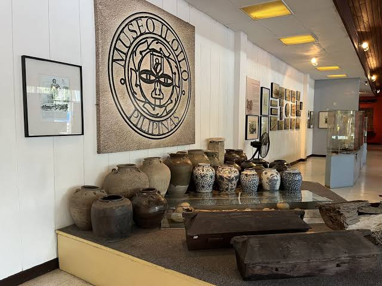

MUSEO ILOILO
About the Museum

Preserving the story of Iloilo.
The Museo Iloilo was conceived by the Ministry of Tourism in the late 1960s to spur tourism development in the Western Visayas region.
Today, the museum serves as a repository and space for sharing materials that represent the cultural and historical heritage of Iloilo and its people.
Its collections provide visitors with an opportunity to encounter objects and materials connected to the province's history, traditions, art, religion, archaeology, and way of life.

INSIDE THE MUSEUMPRESERVATION
A repository of living heritage.
The Iloilo Cultural Research Foundation, Inc. manages and administers Museo Iloilo, supporting the preservation and sharing of the province's cultural and historical resources.
Many objects. Many stories.
The museum's holdings include archaeological specimens, religious artifacts, textiles, historical memorabilia, vintage photographs, paintings, books, periodicals, papers, and studies.
Together, these materials offer different perspectives on the history and cultural identity of Iloilo.
VISIT US
Step into Iloilo's story.
Discover the cultural and historical legacy of the Province of Iloilo.
Plan your visit ▷